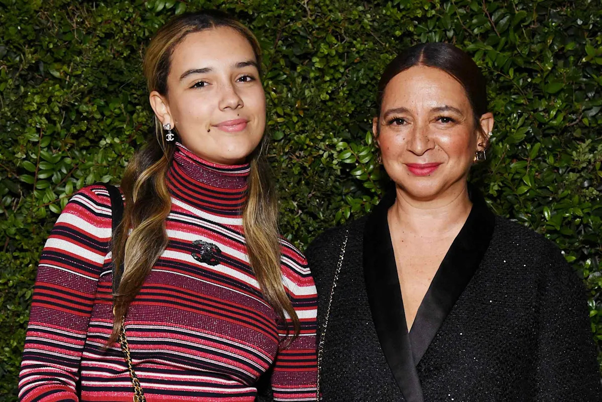

Все о детях Майи Рудольф и Пола Томаса Андерсона, которые все появились в фильме «Licorice Pizza

НУЖНО ЗНАТЬ
- Мейя Рудольф и Пол Томас Андерсон воспитывают вместе четыре ребенка за более чем 20 лет их совместной жизни
- Пара родила дочь Перл в 2005 году, затем Люсиль в 2009, Джека в 2011 и Минни в 2013
- Они старались держать своих детей вдали от внимания публики
Мейя Рудольф и Пол Томас Андерсон – гордые родители четырех детей: Перл, Люсиль, Джека и Минни.
Актриса из Loot и режиссер, получивший номинацию на Оскар в One Battle After Another, по сообщениям, вместе с 2001 года. Хотя они не состоят в законном браке, она называет его своим мужем с рождения их первого ребенка.
«Люди знают, что означает [муж]», — сказала она The New York Times в сентябре 2018 года. «Это означает, что он – отец моего ребенка, и я живу с ним, и мы – пара, и мы не собираемся расставаться».
Разговор с PopSugar в тот же год, актриса поделилась своими мыслями о материнстве и о том, как этот опыт изменил ее взгляд на жизнь. «Когда вы думаете о другом человеке, которого вы видите, и понимаете, что он для вас гораздо важнее, и у вас есть инстинкт заботиться о нем, вы естественно делаете то, что правильно и что важно, и он всегда должен быть на первом месте», — объяснила Рудольф.
Вот все, что вам нужно знать о детях Майи Рудольф и Пола Томаса Андерсона: Перл, Люсиль, Джек и Минни.
Перл Андерсон, 20 лет
Перл Минни Андерсон и Майя Рудольф посещают ужин CHANEL 19 сентября 2023 года в Лос-Анджелесе, Калифорния.
Фото: Jon Kopaloff/WireImage
Рудольф и Андерсон стали родителями в первый раз, когда их дочь, Перл Андерсон, появилась на свет 15 октября 2005 года.
Актриса родила во время середи сезона в Saturday Night Live, где она работала с 2000 по 2007 год. В то время Тина Фей объявила о «маленьком орешке» во время сегмента Weekend Update.
После рождения Перл, Рудольф сказала, что она и Андерсон «очень повезло» со своей дочерью, которую она назвала «исключительной».
Когда она все еще кормила, Перл летала с мамой в Нью-Йорк на SNL. «Она просто выдающаяся путешественница», — рассказала Рудольф в 2006 году в журнале Bust. «Она хорошо себя ведет в самолете и дружелюбна. Очень смешно наблюдать за ней, когда она общается с незнакомыми людьми; она улыбается всем. Она очень приятная женщина.»
До появления Перл, Рудольф была полностью «преданной Saturday Night Live«, — она рассказала NPR в марте 2012 года. «Очень сложно быть рядом с кем-то, когда ты работаешь на шоу, из-за того, сколько времени оно требует.»
После семи лет работы на шоу, Рудольф покинула SNL, когда ее первый ребенок был 2 года. В августе 2017 года она рассказала Parade о своем решении покинуть этот культовый скетч-шоу.
Мелания Трамп, по сообщениям, ввела строгий закон о Mar-a-Lago, чтобы обеспечить «непреложную» конфиденциальность для сына Баррона
 TheBlast
TheBlast
1.4K
Элизабет Херли носит бикини из цепи, по неожиданной причине
 InStyle
InStyle
Адам Персон отвечает комику, высмеивающему его внешность: «Я не хочу, чтобы мою инвалидность высмеивали»
 People
People
393
Модель SI Swim с выдающейся узкой талией рискует слишком маленьким бикини для показа 2026 года
 The Sporting News
The Sporting News
«Когда у меня появилась дочь, это было самое подходящее время, чтобы уйти», — сказала она изданию. «Сложно работать в ночном комедийном шоу и быть мамой. Я это сделала, и я бы не променяла это ни на что, но я бы не рекомендовала это».
Когда ее старшая дочь росла, Рудольф начал замечать сходство между их характерами. В интервью, проведенном Джоном Красински для BlackBook в 2009 году, актер сказал, что Перл – «самая крутая девушка, которую я когда-либо встречал», что, впрочем, не стало для актрисы большой неожиданностью.
«Давайте так: Если бы она заявила, что она такая застенчивая, и говорила, что «мне не нравится читать и выступать на сцене», то я бы сказала: «Это не мой ребенок», — пошутил Рудольф. «Поэтому меня не очень удивило, что она говорит: «Эй, я веселая и мне нравится общаться».
Рудольф обычно поддерживает свою личную жизнь в тайне и не появляется на публике со своими четырьмя детьми или не публикует их фотографии в социальных сетях. Однако, актриса рассказывала о своих детях в интервью, включая то, как Перл отреагировала, увидев ее работу. В 2016 году Рудольф рассказала в PEOPLE, что Перл была «очень горда ею.
Лусиль Андерсон, 16
Майя Рудольф и Пол Томас Андерсон прибывают на 90-й ежегодный церемония вручения премии «Оскар» 4 марта 2018 года в Голливуде, Калифорния.
Фото: VALERIE MACON/AFP/Getty
Рудольф и Андерсон стали родителями второго ребенка, дочери Лусиль Андерсон, 6 ноября 2009 года.
Время ее прибытия неожиданно для актрисы и режиссера, и они не успели добраться до больницы. «[Роды дома] не были моей планом, но именно так и произошло… потому что ребенок родился очень быстро», — сказала Рудольф в Chelsea Lately в 2011 году. «Это было страшно, но в то же время довольно круто.»
Рудольф объявила о том, что ждет второго ребенка, в интервью для Entertainment Tonight Canada. Она отметила, что беременность с Перл помогла ей подготовиться к второй: «Первый раз ты как будто в замешательстве: ‘Что мы делаем? Кто приходит? Как нам с ними обращаться?’ Но в этот раз я думаю: ‘Я должна сесть, я беременна’.»
В марте 2021 года Перл, Лусиль и их младшие братья, Джек и Минни, добрались до студии 8H, когда мама была ведущей SNL. Рудольф объявила об их присутствии во время ее монолога, сказав публике: «У меня есть четыре замечательных ребенка и они все здесь сегодня. Не заставляйте меня плакать.»
«Просто хочу предупредить моих детей, сегодня вечером мама наденет много париков, хорошо?» — добавила Bridesmaids, отметив, что «и будет много странных голосов, чтобы это было как обычный день дома, я просто буду носить бюстгальтер».
Несмотря на то, что она старается держать детей в тени, Рудольф поддерживает их творческие таланты, включая их музыкальные способности.
«Я думаю, у них есть дар музыки, и они не осознают, насколько они хороши, поэтому они это скрывают», — сказала она на Late Night with Seth Meyers в июне 2022 года. «Я заставляю их всех играть, посещать уроки фортепиано».
Все четверо детей Рудольф также снялись в фильме 2021 года своего отца Licorice Pizza, о котором актриса рассказала Майерсу, что частично связано с ограничениями, введенными в связи с пандемией COVID-19.
«Мы занимались онлайн-обучением, и это было страшное время», — сказала она. «Это предоставило невероятный опыт, когда мои дети, их друзья, родители их друзей, мои родители, моя няня — все были вовлечены. Мы все были вместе, поэтому у нас был свой маленький мир».
Джек Андерсон, 14
Майя Рудоль и Пол Томас Андерсон посещают 94-й ежегодный церемониал вручения премии «Оскар».
Источник: Кевин Мазур/WireImage
Рудоль и Андерсон стали родителями третьего ребенка, сына Джека Андерсона, 3 июля 2011 года.
Как и в случае с Перл и Люсиль, пара решила не узнать пол ребенка заранее. Перед рождением Джека, Рудоль рассказала в Access Hollywood, что она «рада, что это остается тайной».
«Самое интересное – это не знать, кто придет», – сказала она. «Вам нужно ждать девять месяцев, чтобы получить сюрприз, но потом это очень хорошо, потому что это действительно сюрприз».
После рождения Джека, Рудоль описала себя как «немного профессионала» в вопросах беременности и родов. Хотя она сказала, что когда она была совсем новой мамой, у нее были определенные «страхи», но эти опасения со временем исчезли.
«К третьему ребенку мы даже больше не использовали автокресло», – пошутила она в интервью для Conan, где она рассказала ведущему Кону О’Брайен что в ее доме постоянно показывали фильмы Turner Classic Movies, чтобы «это проникло в сознание детей», и они узнавали терминологию. Джеку больше всего интересовали классические фильмы, как она отметила.
«Я готовлю завтрак, и я смотрю, и мой 4-летний сын просто наблюдает, и там красивая женщина разговаривает с кем-то и курит сигарету», — поделилась она. «И я думаю, что мой сын думает?»
Минни Ида Андерсон, 12 лет
Майя Рудольф и Пол Томас Андерсон на 80-м ежегодном церемониале премии «Оскар»
Кредит: Джим Смил/BEI/Shutterstock
Рудольф и Андерсон стали родителями четвертого ребенка, Минни Иды Андерсон, 1 августа 2013 года.
Младшая дочь пары названа в честь покойной матери Рудольф, певицы Минни Рипертон, которая умерла 12 июля 1979 года, когда актрисе было 6 лет.
Менее двух лет после рождения Минни, PEOPLE спросили Рудольф, видит ли она в будущем еще детей. «Ни за что», — сказала она. «Я бы была сумасшедшей, если бы это произошло! Я бы была сумасшедшей!»
Рудольф может быть большой звездой в Голливуде, но ее дети предпочитают, чтобы она уделяла им внимание дома. В 2016 году актриса рассказала PEOPLE, что ее дети часто говорят ей: «садитесь и смотрите«, когда они проводят представления в своей гостиной.
«Они танцуют под все», — сказала она. «Они — настоящие актеры.»
Тем не менее, Рудольф с нетерпением ждет возможности показать им свои проекты, включая эпизод, в котором она сыграла злодейку в фильме «Волшебное королевство». «Мои дети — самые большие поклонники Disney, — рассказала она в November 2022 года в журнале PEOPLE. — И я тоже. Я думаю, им это понравится».
Помимо их музыкальных способностей и новых актерских навыков, у детей Рудольф есть еще один интерес — кулинария.
«Мои дети любят печь, — рассказала она в December 2021 года в журнале PEOPLE. — Я бы тоже хотела быть хорошей пекаршей, но в моей семье много интересных рецептов, особенно когда я готовлю для своих младших детей, что для меня всегда самое любимое».
Прочитайте оригинальную статью на People